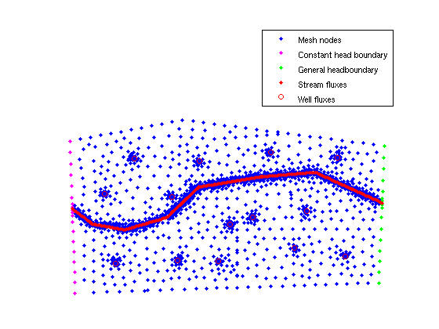
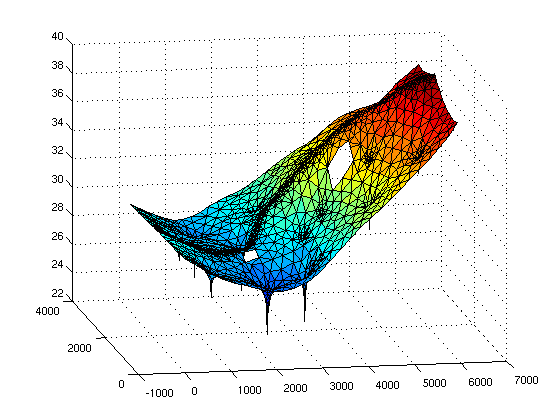

Example 1
| main | Tutorials | Functions | website |
The goal of this example is to show how one can define constant head boundary conditions, general head boundary conditions and assign non uniform fluxes from geospatial data i.e. shapefiles, and eventually simulate a simple 2D aquifer.
Contents
The domain for this example is shown in the following figure:

The boundary conditions for this example are :
- constant head equal to 30 m on the left boundary
- general head boundary equal to 40 m with conductance equal 160 m^3/day on the right boundary.
- No flow on the top and bottom boundaries.
Each red polygon, which represent a different land use has different diffuse groundwater recharge value which is given in a shapefile.
Load data
The first step in any modeling exersize is the mesh generation. This is already covered in another tutorial. For this example we have saved the data in .mat files and we will just import them into matlab workspace
msim_root='/home/giorgos/Documents/mSim_code/msim/'; load([msim_root 'html_help/DATA/shapefile_data.mat']) load([msim_root 'html_help/DATA/triangle_linear.mat'])
In the matlab workspace there are 4 structure variables which are self explainatory geospatial data, and the variables p and MSH which describe the mesh nodes and elements repsectively.
In particular the mesh has
Nel = size(MSH(3,1).elem(1,1).id, 1)
Nel =
3763
elements and
Np = size(p, 1)
Np =
1933
nodes
Here we will assume that the aquifer is uniform with hydaulic condutivity equal to 40 m/day and has a uniform thickness equal to 10 m. Therefore each element will have the same transmisivity value. In mSim we create a variable with Nel rows one for each element
Tel=40*ones(Nel,1)*10; %m^2/day
Assign fluxes
The groundwater recharge is a bit more complicated. Each land use polygon has its own recharge rate. Unfortunatelly the mesh generated by Gmsh wasn't able to create elements constraint on the recharge polygons. As a result there are mesh elements that lay between two or maybe more recharge polygons. To assigne a unique value per element we will compute first the element barycenters. Finally each element will be assigned the recharge rate of the polygon that the barycenter is in. If thats not clear I hope that after doing the computation below will be clarified. So first lets compute the barycenters of the elements. Because the calculation of barycenters is commonly used there is a vectorized function for this
cc = Calc_Barycenters(p, MSH(3,1).elem(1,1).id);
Next we will loop through the recharge polygons and identify which element barycenters are inside that polygon and assign the approriate recharge value. But first we will create the appropriate structure variable
FLUX(1,1).id = [1:Nel]'; FLUX(1,1).val = zeros(Nel,1);
Here we created a structure variable with 2 fields. We will add more fields later. The id field containts the ids of the elements, which is the numbering in the MSH variable and a field val contains the flux rates and it is currently initialized to zero. Now its time for the loop
for i=1:size(landuse,1) id=find(inpolygon(cc(:,1), cc(:,2), landuse(i,1).X, landuse(i,1).Y)); FLUX(1,1).val(id,1)=landuse(i,1).Q_rch; end
Now we will add few more fields in this structure
FLUX(1,1).dim=2;%is the dimension of the elements FLUX(1,1).el_type='triangle'; %This is the type of element FLUX(1,1).el_order='linear'; %This is the element order FLUX(1,1).id_el=1;%This is the index of the elements in the MSH.elem array
In this example we will assign the stream rates directly to nodes. Therefore we will loop through the stream segments and identify which nodes are very close to the stream. In fact we will consider any node closer than 10 m to the stream as part of the stream. Because requesting the distance between points and lines is a typical way to identify boundary conditions, stresses etc. we wrote a vectorized function Dist_Point_LineSegment to do this faster. Note that this function is vectorized only for many-points-one-line or one-point-many-lines calculations. To allow vectorized computation the line have to be described in a somewhat ackward way as [x1 y1 x2 y2], where (x1,y1) and (x2,y2) are the two endpoints of the line. First we initialize an empty variable. At the end of the loop this variable will have two columns: a node id which is associated with stream flux and the rate
FLUX_point=[]; %if you expect a very large number of points consider allocating for faster implementation for i=1:size(streams,1) id_on_that_strm=[]; for j=1:size(streams(i,1).X,2)-2 l=[streams(i,1).X(j) streams(i,1).Y(j) streams(i,1).X(j+1) streams(i,1).Y(j+1)]; dst=Dist_Point_LineSegment(p(:,1),p(:,2),l); id=find(dst<10); id_on_that_strm=[id_on_that_strm;id]; end id_on_that_strm = unique(id_on_that_strm); FLUX_point=[FLUX_point; id_on_that_strm ... 10*(streams(i,1).length*streams(i,1).Q) ... % stream width x stream length x flux rate /length(id_on_that_strm)*ones(length(id_on_that_strm),1)]; %the rate is distributed to the nodes equally end
The last type of fluxes are the wells. Typically we assign the well pumping rates on nodes. To do so, for each well we will find the closest mesh node, assign the well rate, and append it to the FLUX_point variable.
for i=1:size(wells,1) [~, id]=min(sqrt((wells(i,1).X - p(:,1)).^2+(wells(i,1).Y - p(:,2)).^2)); FLUX_point=[FLUX_point;id wells(i,1).Q]; end
Assign boundary conditions
Next we define the boundary conditions. In the dom shapfile the 1st side corresponds to the right boundary and the 3rd side to the left boundary. Using again the vectorized function Dist_Point_LineSegment we identify the ids of the mesh nodes of the right and left boundary. The format for the constant head matrix is [id, head] and for the GHB is [id, head, conductane]
The left boundary is described from the line segment between the 3rd and 4th points of the dom shapefile.
l=[dom.X(3) dom.Y(3) dom.X(4) dom.Y(4)]; dst=Dist_Point_LineSegment(p(:,1),p(:,2),l); id_l=find(dst<1); CH=[id_l 30*ones(length(id_l),1)];
The right boundary is described from the line segment between the 1st and 2nd points of the dom shapefile.
l=[dom.X(1) dom.Y(1) dom.X(2) dom.Y(2)]; dst=Dist_Point_LineSegment(p(:,1),p(:,2),l); id_r=find(dst<1); GHB=[id_r 40*ones(length(id_r),1) 160*ones(length(id_r),1)];
It is always a good idea to check visually that the boundary conditions have been assigned correctly. One easy way to do so is by plotting each boundary node with a different color. First we will plot all mesh nodes and then the left righ boundaries and the FLUX_Points. In addition we will plot the positive FLUX_Points values, which correspond to streams, with different color from the negative ones which correspons to wells.
plot(p(:,1),p(:,2),'.') hold on plot(p(CH(:,1),1),p(CH(:,1),2),'.m') plot(p(GHB(:,1),1),p(GHB(:,1),2),'.g') plot(p(FLUX_point(FLUX_point(:,2)>0,1),1),p(FLUX_point(FLUX_point(:,2)>0,1),2),'.r') plot(p(FLUX_point(FLUX_point(:,2)<0,1),1),p(FLUX_point(FLUX_point(:,2)<0,1),2),'or') legend('Mesh nodes','Constant head boundary','General headboundary','Stream fluxes','Well fluxes') axis([-200 6500 0 5300]) axis equal axis off
Assemble
After identifing the boundary conditions, stresses and properties we can assemble the matrices. First we will define few general simulation options and then we will assemble the LHS
simopt.dim=2; simopt.el_type='triangle'; simopt.el_order='linear'; [Kglo H]= Assemble_LHS(p, MSH(3,1).elem(1,1).id, Tel , CH, GHB, simopt); size(Kglo)
ans =
1950 1950
Note that the size of the Kglo matrix, which is the left hand size matrix, is different to that of the mesh size. This is due to the extra hypothetical nodes that are used to simulate the general head boundary conditions.
In a similar way, we assemble the right hand side. In fact we only need to assemble the flux properties that are defined on elements, since the ones that are defined on nodes are already in the form of a RHS vector.
F_rch= Assemble_RHS(length(H),p, MSH, FLUX);
To verify the assembly of the RHS, the sum(F_rch) should be equal to the total recharge from landuse polygons. The following loop calculates the total recharge from the shapefile
for i=1:size(landuse,1) Q_rch(i)=landuse(i,1).Q_m3_day; end; sum(Q_rch)
ans = 5.5589e+03
while sum(F_rch) is
sum(F_rch) error = sum(Q_rch) - sum(F_rch)
ans = (1,1) 5.4920e+03 error = 66.8135
This descrepancy is due to the fact that few elements lay on two recharge polygons but they have been assigned the recharge value of the polygon where the barycenter falls.
Solve
Now we are ready to solve the system. Fist we will combine the fluxes to one vector and then solve
F=F_rch+sparse(FLUX_point(:,1),1,FLUX_point(:,2),length(H),1); H=solve_system(Kglo,H,F);
Simple triangular meshes can be easily visualized in Matlab
clf trisurf(MSH(3,1).elem(1,1).id,p(:,1),p(:,2),H(1:size(p,1))) view(-10,16)